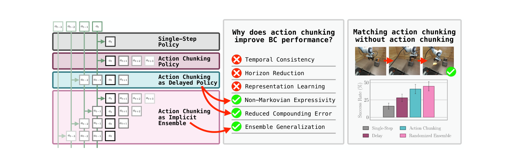
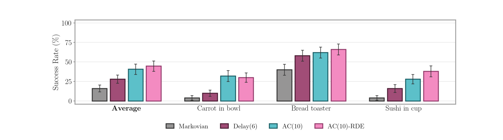

제출: 2026년 8월 3일 · 정책은 전부 diffusion policy · Libero 130태스크 · Robomimic · 실기 Franka 3태스크 · 시드 3개 이상 평균
한 줄 요약 (TL;DR)
요즘 로봇 정책은 거의 전부 action chunking(한 번에 한 스텝이 아니라 앞으로의 여러 스텝을 한꺼번에 예측해 그대로 실행하는 방식)을 쓴다. 잘 되는 건 알지만 왜 잘 되는지는 불분명했다. 이 논문은 기존에 통용되던 세 가지 설명 — 동작이 매끄러워져서, 결정 횟수가 줄어서, 표현 학습에 좋아서 — 이 전부 진짜 이유가 아님을 실험으로 보인다. 진짜 이유는 둘이다. ① 과거 관찰을 보고 행동을 정하는 효과(사람 시연의 "잠깐 멈춤" 같은 습관을 담을 수 있고, 오차 누적도 줄어든다), ② 암묵적 앙상블 — 청크를 학습하면 "지금 관찰로 지금 행동", "1스텝 전 관찰로 지금 행동", … 이라는 여러 개의 예측기를 동시에 배우게 되고, 이게 앙상블처럼 작동한다. 결정적 증거: 청크를 전혀 실행하지 않고 매 스텝 지연 시간을 무작위로 골라 한 행동씩만 내놓아도 성능이 그대로 재현된다(Tool Hang 75.2% vs 71.8%, 단일 지연은 51.6%). 나아가 진짜 앙상블을 명시적으로 쓰면 action chunking을 넘어선다(Transport 12.6% → 41.5%, Tool Hang 75.2% → 87.6%).
1배경 · 문제의식
행동 복제(behavioral cloning, 사람 시연을 그대로 따라 하도록 지도학습시키는 방법)로 로봇을 학습시킬 때, action chunking은 사실상 표준이 됐다. 하나의 관찰 ot로부터 k개의 연속 행동 (at, at+1, …, at+k−1)을 통째로 예측하고, 실행할 때는 그중 전부 또는 일부를 중간에 다시 보지 않고(open-loop) 실행한다. ACT 이후 대규모 로봇 정책 연구는 거의 예외 없이 이 방식을 쓴다.
그런데 왜 도움이 되는지에 대한 이해는 빈약했다. 통용되던 설명은 세 가지다.
시간적 일관성(temporal consistency) — 사람 시연은 부드럽게 이어지는 동작인데, 매 스텝 독립으로 예측하면 덜컹거린다. 묶어서 예측하면 매끄러워진다.
지평 축소(horizon reduction) — k스텝마다 한 번만 결정하므로 결정 횟수가 1/k로 준다. 결정이 적으면 오차가 쌓일 기회도 준다.
표현 학습(representation learning) — 미래 여러 스텝을 맞히도록 학습하면 더 좋은 내부 표현이 생긴다.
이 논문이 하는 일: 세 설명을 하나씩 실험으로 검증하고 전부 기각한 뒤, 실제 원인 두 가지를 찾아낸다. 그리고 그 원인만 재현하면 action chunking 없이도 같은 성능이 나옴을 보인다. 즉 "청크로 묶어 실행하는 것" 자체는 본질이 아니었다.
2핵심 Contribution
기존 세 가설을 모두 기각 — 시간적 일관성·지평 축소·표현 학습이 action chunking의 성공을 설명하지 못함을 시뮬레이션과 실기 양쪽에서 보였다. 특히 지연 정책이라는 단순한 대조군 하나로 앞의 두 가설을 동시에 무너뜨린다.
"암묵적 앙상블"이라는 새 설명 제시 — 청크를 학습하면 서로 다른 시간 관계를 학습한 여러 예측기가 한 모델 안에 생기고, 이것이 앙상블처럼 작동해 강건성과 일반화를 높인다. 이 논문의 가장 독창적인 발견.
청크 없이 청크 성능 재현 + 그 이상 — 매 스텝 지연을 무작위로 뽑아 한 행동만 내놓는 방식(RDE)이 청크 실행 성능에 필적하고, 진짜 앙상블을 쓰면 action chunking을 크게 앞선다(Robomimic Transport에서 12.6% → 41.5%로 3배 이상).
3Method — 검증에 쓰인 도구들
핵심 대조군: 지연 정책 (delayed policy)
이 논문의 논증은 거의 전부 지연 정책이라는 하나의 대조군에 기댄다. 정의는 단순하다.
지연 정책 Delay(d): 매 스텝 한 개의 행동만 내놓되, 지금 관찰이 아니라 d스텝 전의 관찰을 보고 정한다 — 즉 at | ot−d를 예측한다.
왜 이게 결정적 대조군인가: 지연 정책은 매 스텝 새로 계산하므로 결정 횟수가 전혀 줄지 않는다(→ 지평 축소 효과 없음). 또 한 스텝씩만 내놓으므로 동작을 묶어 매끄럽게 만드는 효과도 없다(→ 시간적 일관성 없음). 그런데도 성능이 나온다면, 그 두 가설은 원인이 아니라는 뜻이다.
편리한 점은 이미 학습된 청크 정책에서 공짜로 뽑아낼 수 있다는 것이다. 청크 정책은 ot로부터 (at, …, at+k−1)를 예측하므로, 그중 d번째 항목만 꺼내 쓰면 "ot를 보고 at+d를 예측"하는 지연 정책이 된다.
제안 방법 ①: 무작위 지연 앙상블 (RDE)
암묵적 앙상블 가설이 맞다면, 지연 정책의 약점은 명확하다 — 청크 정책이 배운 여러 시간 관계 중 딱 하나만(at | ot−d) 쓴다는 점이다. 그래서 전부 돌아가며 쓰게 한다.
AC(n)-RDE 절차: 매 스텝 t마다 ① 지연값 i를 0부터 n−1 중 무작위로 뽑고, ② 그 지연에 해당하는 지연 정책으로 행동 하나만 뽑아 실행한다.
직관: 청크 실행이 "여러 예측기를 순서대로 한 번씩 쓰는 것"이라면, RDE는 "매번 주사위를 굴려 하나를 골라 쓰는 것"이다. 둘 다 여러 예측기를 활용하지만, RDE는 청크를 통째로 실행하지 않는다 — 매 스텝 새 관찰을 보고 새로 계산한다.
제안 방법 ②: 명시적 앙상블 (AC(n)-Ens)
암묵적 앙상블이 이득의 원천이라면, 진짜 앙상블을 쓰면 더 좋아야 한다. 그래서 같은 데이터로 독립적으로 학습한 정책 m개를 만들어 함께 쓴다. 한 모델 안에 우연히 생긴 앙상블 대신, 서로 다른 초기값·학습 경로를 가진 진짜로 다른 모델들을 모은 것.
실험 설정
정책
전부 diffusion policy(노이즈를 점진적으로 걷어내며 행동을 생성하는 모델)로 통일. 결론이 특정 구조에 의존하지 않도록
시뮬레이션
Libero(130태스크, 태스크당 사람 시연 50개. 주로 Libero-90 사용) · Robomimic(어려운 4종: Can, Square, Transport, Tool Hang)
실기
Franka Emika 팔, 3태스크(당근을 그릇에 · 토스터에서 빵 꺼내기 · 초밥을 컵에). 태스크당 시연 50개, 제어 15Hz, 정책당 50회 시행
평가 지표
성공률 J와 검증 오차 Lval(정책이 예측한 행동과 실제 시연 행동의 차이 제곱). 시드 3개 이상 평균
4실험 결과 — 세 가설의 기각
가설 1 기각: 시간적 일관성이 아니다
먼저 사람이 실제로 비마르코프적(non-Markovian — 지금 상태만 보고 행동이 정해지지 않고, 과거 이력에 따라 달라지는 성질)임은 사실로 확인된다. 논문이 든 예가 명확하다.
"서랍 열기" 과제의 결정 지점: 로봇이 아래로 내려가 손잡이를 잡고 당겨야 한다. 손잡이에 도달하는 순간, 방향을 바꿔야 하는 지점이 온다. 그런데 사람 시연자는 여기서 몇 스텝 동안 멈춘다 — 손잡이를 확실히 잡았는지 확인하려는 듯. 상태는 그대로인데 사람은 일관되게 기다린다.
마르코프 정책(지금 관찰만 봄)은 이걸 못 배운다. "멈춤"과 "이동"을 확률적으로 섞어 내놓을 뿐이다. 실제로 검증 오차를 시간축으로 그려보면, 정확히 이 지점(약 80스텝)에서만 마르코프 정책의 오차가 치솟는다. 그리고 이 어긋남이 학습에서 못 본 상태로 로봇을 끌고 가 실패로 이어진다.
그러나 — 이 비마르코프성은 지연 정책만으로 충분히 담긴다. Libero-90에서 지연 정책이 청크 정책의 성능을 맞추거나 넘어선다(94.0% vs 89.2%). 지연 정책은 동작을 묶지 않으므로 시간적 일관성이 없다. 따라서 시간적 일관성은 필요조건이 아니다. 논문은 π0.5 같은 대형 VLA를 Libero에 맞춘 경우에도 지연 정책으로 돌렸을 때 성능이 유지됨을 확인했다.
가설 2 기각: 지평 축소가 아니다
지연 정책은 매 스텝 다시 계산하므로 결정 횟수가 전혀 줄지 않는데도 청크 정책과 맞먹는다. 이것만으로 지평 축소는 원인이 아니다.
다만 오차 누적이 준다는 것 자체는 사실이다. 논문은 이론적으로도 보인다 — 매끄러운 동역학 가정 하에서, 청크 정책과 지연 정책이 정확히 같은 오차 누적 상한을 갖는다. 즉 오차 감소의 실제 메커니즘은 "결정 횟수가 줄어서"가 아니라 "과거 관찰을 조건으로 삼아서"다.
왜 과거 관찰이 유리한가: 로봇이 굴러갈수록 오차가 쌓여 학습 때 본 적 없는 상태로 흘러간다. 그런데 더 이른 시점의 관찰은 아직 오차가 덜 쌓인, 학습 분포에 더 가까운 상태다. 그 익숙한 관찰을 보고 미래 행동을 예측하는 편이, 이미 어긋나 버린 현재 상태를 보고 예측하는 것보다 정확하다.
가설 3 기각: 표현 학습이 아니다
"청크로 학습만 하고 첫 행동 하나만 실행해도 마르코프 정책보다 낫다"는 관찰이 표현 학습 가설의 근거였다. 하지만 이 역시 지연 정책으로 설명된다 — 청크 학습으로 얻은 이득은 지연 관찰 조건화에서 오는 것이지 표현이 좋아져서가 아니다.
그런데 Libero에서 통한 논리가 Robomimic에선 깨진다
Robomimic의 어려운 과제들에서는 지연 정책이 청크 정책을 못 따라간다. Tool Hang에서 청크 75.2% vs 지연 51.6%로 격차가 크다. 여기서 남은 무언가가 있다는 단서가 나오고, 그것이 다음 절의 암묵적 앙상블이다.
5핵심 발견 — 암묵적 앙상블
청크 정책을 학습시킬 때 무슨 일이 벌어지는지 다시 보자. 학습 데이터의 어떤 행동 at 하나에 대해, 모델은 여러 개의 관계를 동시에 배운다.
at | ot (지금 관찰로 지금 행동) · at | ot−1 (1스텝 전 관찰로) · at | ot−2 · … · at | ot−k+1
즉 하나의 관계만 맞추는 게 아니라 k개의 서로 다른 예측기를 한 모델 안에서 학습하는 셈이다. 각각은 전체 이력 중 서로 다른 일부만 보고 같은 행동을 맞히려 한다. 랜덤 포레스트가 각 나무에게 특징의 서로 다른 부분집합을 주고 학습시킨 뒤 모으는 것과 같은 구조다.
증거: 청크 정책이 유도하는 앙상블의 검증 오차가 단일 지연 정책보다 확연히 낮고, 진짜 앙상블(독립 학습한 여러 모델)의 오차에 근접한다. 게다가 적절한 지연값을 고르면 지연 정책이 청크 정책보다 검증 오차는 더 낮다 — 그러니 Robomimic에서 지연 정책이 뒤지는 이유는 표현력 부족이 아니라 앙상블 효과의 부재다.
결정적 실험: 청크를 실행하지 않고 청크 성능 재현하기
벤치마크
마르코프(1스텝)
Action Chunking
단일 지연
무작위 지연 앙상블(RDE)
Libero-90
68.9
89.2
94.0
93.6
Libero-10
19.8
88.7
86.8
88.5
Libero-Spatial
58.1
91.6
92.0
92.7
Robomimic Can
83.7
97.2
93.5
96.7
Robomimic Square
69.0
85.4
80.8
82.4
Robomimic Transport
3.3
12.6
7.9
12.1
Robomimic Tool Hang
28.0
75.2
51.6
71.8
가장 중요한 줄은 Tool Hang이다 — 단일 지연은 51.6%로 크게 뒤지지만, 같은 지연 정책들을 무작위로 번갈아 쓰기만 해도 71.8%로 뛰어 청크(75.2%)에 근접한다. 차이는 오직 "하나만 쓰느냐, 여럿을 돌려 쓰느냐"뿐이다. 참고로 여러 예측을 평균 내는 방식(AC(n)-TE)은 Tool Hang에서 42.2%에 그쳐, 평균이 아니라 무작위 선택이 핵심임을 보여준다.
실기 검증 (Franka, 3태스크 × 50회)
시뮬레이션 결론이 실제 로봇에서도 유지된다. 평균 성공률 기준 마르코프 약 16% → 단일 지연 약 28% → 청크 약 41% → RDE 약 45%로, RDE가 청크를 완전히 대체한다. 실기에서는 추론 시간 때문에 모든 방식에 1스텝 지연이 추가로 들어간다.
6제안 — 명시적 앙상블로 action chunking 넘어서기
암묵적 앙상블이 이득의 원천이라면, 진짜 앙상블은 더 나아야 한다. 실제로 그렇다.
벤치마크
Action Chunking
명시적 앙상블 AC(n)-Ens
향상
Robomimic Transport
12.6
41.5
3.3배
Robomimic Tool Hang
75.2
87.6
+12.4%p
Robomimic Square
85.4
88.3
+2.9%p
Robomimic Can
97.2
98.5
+1.3%p
Libero-Spatial
91.6
95.4
+3.8%p
Libero-10
88.7
90.6
+1.9%p
Libero-90
89.2
94.1
+4.9%p
어려운 과제일수록 격차가 크다. Transport는 12.6%→41.5%로 3배 이상. 청크 정책 안에 우연히 생긴 앙상블보다 독립적으로 학습한 진짜 앙상블이 훨씬 강하다는 뜻이며, 이 논문의 설명이 옳다는 가장 강한 증거이기도 하다.
7한계 · 남은 질문 (저자들이 짚은 것)
지연값을 고르는 법: 검증 오차가 가장 낮은 지연은 대략 5~15 구간이었다. 지금은 모든 지연을 균등하게 무작위로 뽑는데, 성능이 좋은 지연에 가중치를 주면 더 나아질 수 있다.
이력 조건화(history conditioning)와의 관계: 비마르코프성을 온전히 담으려면 과거 관찰 전체를 보는 정책이 필요할 수 있다. 다만 이력 조건화는 비마르코프성은 잡아도 오차 누적 감소와 앙상블 효과는 못 얻는다 — 셋을 다 갖는 방법은 열린 문제.
제어 주파수 의존: 실험은 전부 15~20Hz에서 수행됐다. 주파수가 크게 다르면 결론이 달라질 수 있다.
비용: 명시적 앙상블은 여러 모델을 따로 학습하고 함께 돌려야 하므로 학습·추론 비용이 배로 든다. 반면 RDE는 모델 하나만으로 청크 성능을 낸다.
8핵심 Figure / Table

Figure 1 — 논문의 전체 요지. (좌) 네 가지 정책 방식 비교 — 단일 스텝 정책, action chunking 정책, 지연 정책으로 본 action chunking, 암묵적 앙상블로 본 action chunking(같은 행동 at를 서로 다른 시점의 관찰로부터 예측하는 여러 관계가 겹겹이 학습됨). (중) 기각된 가설 3개(시간적 일관성·지평 축소·표현 학습, ❌)와 실제 원인 3개(비마르코프 표현력·오차 누적 감소·앙상블 일반화, ✅). (우) 실기 결과 — 무작위 지연 앙상블(분홍)이 action chunking(청록)에 필적. (출처: arXiv:2608.02547)

Figure 10 — 실제 Franka 로봇 3태스크 성공률. 왼쪽부터 평균 / 당근을 그릇에 / 토스터에서 빵 꺼내기 / 초밥을 컵에. 회색 마르코프(1스텝)는 크게 뒤지고, 자주색 단일 지연은 그보다 낫지만 청록색 action chunking에는 못 미친다. 분홍색 무작위 지연 앙상블(RDE)이 action chunking을 따라잡거나 앞선다 — 청크를 통째로 실행하지 않고도 같은 성능이 난다는 이 논문의 핵심 주장을 실기로 확인한 그림. 각 막대는 50회 시행 평균. (출처: arXiv:2608.02547)
논문 4.1절의 예시는 Libero-90의 6번 과제 "장롱 아래 서랍 열기"다. 로봇은 아래로 내려가 손잡이를 잡고 당겨야 하는데, 손잡이에 닿는 순간 "잡기"에서 "당기기"로 방향을 바꿔야 하는 지점이 온다. 논문은 이를 결정 지점(decision boundary)이라 부른다. 사람 시연자는 여기서 곧바로 방향을 바꾸지 않고 몇 스텝(n) 동안 일관되게 멈춘다 — 손잡이를 확실히 잡았는지 확인하려는 듯한 습관이다.
이 멈춤이 왜 비마르코프적(non-Markovian — 지금 눈에 보이는 상태만으로는 다음 행동이 정해지지 않고, 과거 이력까지 봐야 정해지는 성질)인지가 핵심이다.
마르코프 정책이 실패하는 이유: 멈춰 있는 동안에는 화면이 사실상 변하지 않는다. 그래서 지금 관찰 ot만 보는 정책은 이게 멈춤의 첫 스텝인지 마지막 스텝인지 구분할 수 없다. 결국 "계속 멈춰라"를 확정적으로 내놓지 못하고, 학습 데이터에서 그 지점에 나타난 "멈춤"과 "움직임"의 평균적 비율대로 확률적으로 뱉는다(논문 표현으로는 결정 지점에서의 주변 행동 분포, marginal action distribution).
지연 정책이 성공하는 이유: 지연 정책은 지금이 아니라 d스텝 전 관찰 ot−d를 보고 행동을 정한다. 멈춤 구간에서 d스텝을 거슬러 올라가면 로봇이 아직 손잡이로 내려오고 있던 시점이 나오는데, 그때는 위치가 매 스텝 달라지므로 관찰이 서로 구별된다. 즉 과거 관찰이 "멈춘 지 몇 스텝 됐는지"를 알려주는 시계 역할을 한다. (이 시계 비유는 이해를 돕기 위한 설명이고, 논문 본문은 조건만 명시한다.)
조건: 그래서 논문은 청크 길이 또는 지연 d가 최소한 멈춤 길이 n 이상이어야 이 행동을 담을 수 있다고 못 박는다. d가 n보다 짧으면 ot−d도 여전히 멈춤 구간 안이라 똑같이 구분이 안 된다.
근거가 되는 수치: 논문 Figure 6은 이 시연 궤적을 따라 시간축별 행동 예측 오차를 그린 것인데, 마르코프 정책과 지연 정책의 오차가 거의 같다가 오직 80스텝 부근—정확히 결정 지점—에서만 마르코프 쪽이 크게 치솟는다. 그리고 이 어긋남 때문에 마르코프 정책은 결정 지점에서 시연과 다른 길로 새고, 학습 때 본 적 없는 상태에 빠져 실패로 이어진다. Libero-90 전체 평균으로도 마르코프 68.9% → 지연 94.0%로 벌어진다.
이 예시가 논문 전체 논증에서 갖는 의미: 사람이 비마르코프적으로 행동하는 것은 사실이고 그게 마르코프 정책이 실패하는 진짜 원인도 맞다. 하지만 그걸 담는 데 여러 행동을 묶어 실행할 필요는 없다 — 과거 관찰 하나만 봐도 충분하다. 이것이 "시간적 일관성(동작을 매끄럽게 이어주는 효과)은 action chunking의 성공 이유가 아니다"라는 첫 번째 가설 기각의 근거가 된다. 실제로 Libero-90에서는 지연 정책이 청크 정책(89.2%)을 오히려 앞선다.